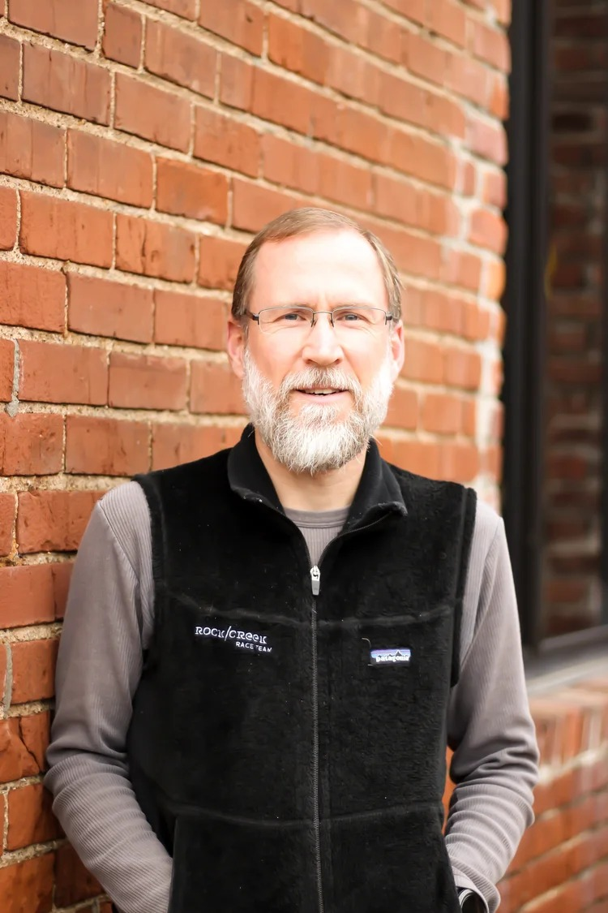

Episode 1
Getting Started — The Doctor's Opinion
Eamonn and John open the book and open the conversation, setting the tone for the series ahead.
Eamonn Cottrell and John Brower read through the first seven chapters of the Big Book of Alcoholics Anonymous — the program of action through the 12 Steps — sharing their own experience, strength, and hope along the way.
Not a Doorknob is a 27-part reading and discussion of the Big Book of Alcoholics Anonymous. Episode by episode, we work through the first seven chapters — the chapters that lay out the program of action through the 12 Steps.
This isn't a lecture. It's two guys reading the text out loud and talking honestly about what it means, what it's meant for us, and how it plays out in real life — sharing our own experience, strength, and hope along the way.
Whether you're new to the program, working the steps again, or just curious what the book actually says, we hope you'll find this useful.

Best listened to in order, but feel free to jump in at any episode.
Episodes available wherever you get your podcasts
A recovery-themed, Christian-flavored daily reflection — 365 days of experience, strength, and hope to go with your morning coffee.